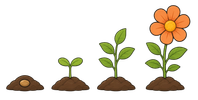

Name:
Datum:
Lösung
Wie spät ist es?
Ich kann volle und halbe Stunden ablesen.
Wähle deine Aufgaben.
Zu 1: Erst der kleine Zeiger. Er zeigt die Stunde.
1
Lies ab. Schreibe die Uhrzeit auf.
2
Zeichne die Zeiger ein.
9 Uhr
halb 5
halb 12
3
Willi sagt: „Eine halbe Stunde nach 7 Uhr ist es 8 Uhr.“ Stimmt das?
Nein. Eine halbe Stunde nach 7 Uhr ist es halb 8.
★
Sternchenaufgabe: Wer mag, knobelt hier. Wie spät ist es eine Stunde nach halb 12?
Es ist
.
Ich kann volle und halbe Stunden ablesen.
Male an, wie weit du schon bist:

Was hat dir geholfen?
das Beispiel
Willis Tipp
ein anderes Kind